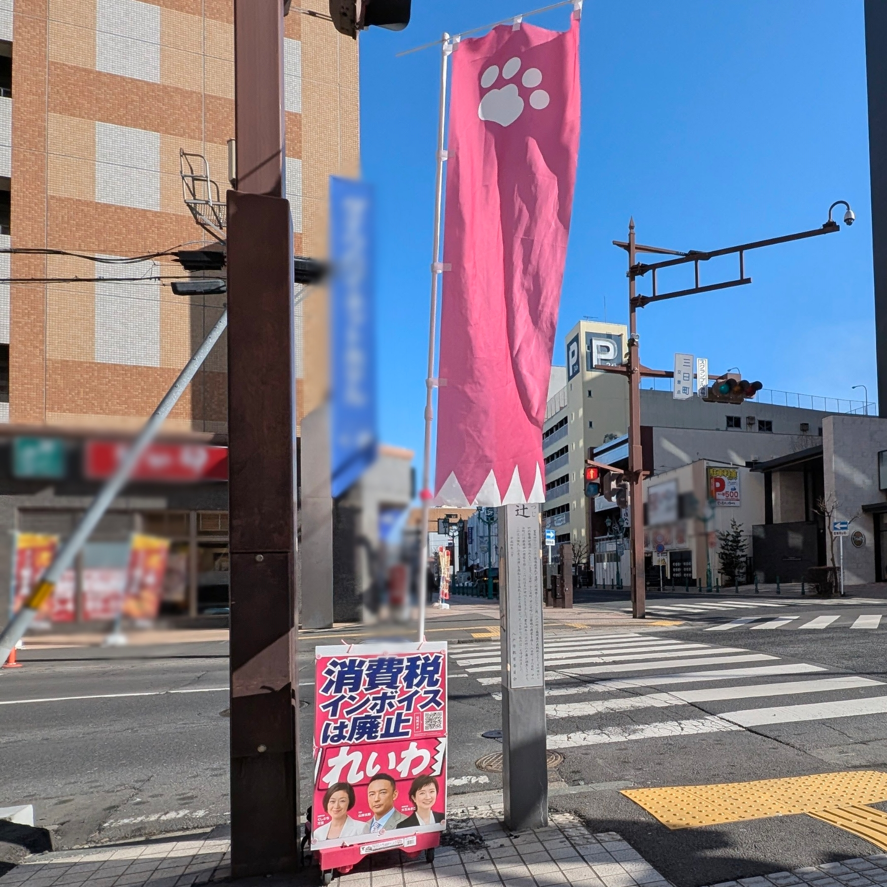

青森県八戸市から、れいわ新選組を自主的に応援する個人が作成したページです。
現時点で、八戸市にはれいわ新選組を応援する組織やチームはなく、まだチームをまとめることができる人もいないため、八戸では各自がソロで自主的に活動しています。
どなたでも自主的に活動してOKです。特別な許可も登録も必要ありません。自分のペースで、自分にできることから始めてみてください。

今後コンテンツを追加していく予定です
お問い合わせ（八戸市個人）
r8supporters@gmail.com青森県八戸市から、れいわ新選組を自主的に応援する個人が作成したページです。
現時点で、八戸市にはれいわ新選組を応援する組織やチームはなく、まだチームをまとめることができる人もいないため、八戸では各自がソロで自主的に活動しています。
どなたでも自主的に活動してOKです。特別な許可も登録も必要ありません。自分のペースで、自分にできることから始めてみてください。

今後コンテンツを追加していく予定です
お問い合わせ（八戸市個人）
r8supporters@gmail.com